Control de Versiones con Git y GitHub
Bienvenidos al que, posiblemente, sea uno de los temas más cruciales de vuestra carrera profesional. Hoy no vamos a hablar de un lenguaje de programación, sino de una herramienta que os salvará de innumerables apocalipsis de código, os permitirá trabajar en equipo como los Vengadores y, en esencia, os dará superpoderes. Hablamos del control de versiones, y de sus dos protagonistas principales: Git y GitHub.
Imagínate que estás construyendo una maqueta de LEGO increíblemente compleja. Llevas horas, y de repente, al poner una pieza, se derrumba una sección entera. ¿Qué haces? ¿Te rindes? ¡No! Si tuvieras un manual de construcción mágico que guardara una foto de tu maqueta cada vez que añades una pieza importante, podrías simplemente volver a la "versión" anterior al desastre y probar otra cosa.
Git es ese manual de construcción mágico para tu código. Es una máquina del tiempo que te permite viajar al pasado de tu proyecto, ver quién cambió qué, por qué, y recuperar cualquier cosa. Y GitHub... GitHub es la biblioteca universal donde todos los desarrolladores guardan sus manuales mágicos para compartirlos, mejorarlos en equipo y construir cosas asombrosas juntos.
Si estáis pensando "Bah, yo guardo mi código en una carpeta llamada proyecto_final_final_ESTE_SI.zip", preparaos para cambiar de vida. Dominar Git no es una opción, es una necesidad. Es el carnet de conducir del desarrollador profesional. ¡Así que abrochaos los cinturones, que despegamos!
Conceptos Fundamentales
Antes de ponernos a teclear comandos como si no hubiera un mañana, necesitamos entender el "qué" y el "porqué". Aquí tenéis los términos clave que se convertirán en vuestro pan de cada día.
Definición: Sistema de Control de Versiones (VCS)
Es un sistema que registra los cambios realizados en un archivo o conjunto de archivos a lo largo del tiempo para que puedas recuperar versiones específicas más adelante. Aunque se puede usar para cualquier tipo de archivo, en nuestro mundo es la piedra angular para gestionar el código fuente.
{kind=link}
Definición: Repositorio (Repo)
Es la carpeta de tu proyecto que está siendo "vigilada" por Git. Contiene todos los archivos de tu proyecto (código, imágenes, etc.) y, lo más importante, una subcarpeta oculta llamada .git que almacena todo el historial de cambios. Es el universo completo de tu proyecto en un solo lugar.
Definición: Commit
Es una "instantánea" o un "punto de guardado" en la historia de tu repositorio. Cada vez que realizas un cambio significativo y lo confirmas, creas un commit. Cada commit tiene un identificador único y un mensaje que describe los cambios realizados. Es como guardar la partida en un videojuego antes de enfrentarte al jefe final.
Definición: Rama (Branch)
Una rama es una línea de desarrollo independiente. Imagina que quieres añadir una nueva funcionalidad (como un formulario de contacto) sin romper el código principal que ya funciona. Creas una nueva rama, trabajas en ella de forma aislada y, cuando todo está perfecto, la "fusionas" de nuevo con la rama principal. La rama principal por defecto casi siempre se llama main.

¿Qué es Git? El ADN de tu Código
En esencia, Git es un sistema de control de versiones con dos superpoderes clave: es distribuido y es de código abierto. Creado por el mismísimo Linus Torvalds (el padre de Linux), se ha convertido en el estándar indiscutible de la industria.
Piensa en Git como el historial médico completo de tu proyecto. No solo registra la versión final, sino cada cambio, cada "operación" (fusión de código), cada "diagnóstico" (corrección de error) y quién fue el "cirujano" (desarrollador) que lo realizó. Su flexibilidad es tal que es la navaja suiza que encontrarás en el cinturón de cualquier profesional, desde desarrolladores de apps hasta científicos de datos que trabajan con AWS o Azure DevOps.
Definición: Sistema de Control de Versiones Distribuido (DVCS)
A diferencia de los sistemas centralizados antiguos, donde el historial completo vivía en un solo servidor, en un sistema distribuido como Git, cada desarrollador tiene una copia completa del historial del proyecto en su propia máquina. Esto te permite trabajar de forma autónoma, hacer commits, y revisar la historia sin conexión a internet.
Las ventajas de usar Git son tan abrumadoras que es más fácil preguntar qué no te da:
- Seguimiento de Cambios (La Máquina del Tiempo): Te permite ver la evolución de tu código, identificar cuándo se introdujo un error y volver a un estado anterior que funcionaba con una facilidad pasmosa.
- Colaboración sin Caos (El Director de Orquesta): Gracias a las ramas, varios desarrolladores pueden trabajar en paralelo en distintas funcionalidades sin estorbarse. Git proporciona las herramientas para luego fusionar todo ese trabajo de forma ordenada.
- Integración Universal (El Camaleón): Git se integra a la perfección con casi todos los Entornos de Desarrollo Integrado (IDEs) modernos como Visual Studio Code, PhpStorm o JupyterLab.
- Trabajo Offline (El Superpoder del Modo Avión): Al tener el repositorio completo en tu máquina, puedes seguir trabajando, haciendo commits y viendo el historial aunque estés en un tren sin Wi-Fi. Solo necesitas conexión para sincronizarte con el equipo.
graph TD
subgraph "Equipo de Desarrollo"
A[Desarrollador 1 - Copia Local Completa]
B[Desarrollador 2 - Copia Local Completa]
C[Desarrollador 3 - Copia Local Completa]
end
subgraph "Servidor Remoto (p.ej. GitHub)"
R[Repositorio Central]
end
A <-->|Sincronización| R
B <-->|Sincronización| R
C <-->|Sincronización| R
style R fill:#f9f,stroke:#333,stroke-width:2px
¿Cómo Funciona Git? Un Vistazo Bajo el Capó
Si Git es una máquina del tiempo, ¿cómo funciona? No es magia, es un sistema ingenioso basado en instantáneas (snapshots) y un flujo de trabajo muy concreto. Cada vez que haces un commit, Git no guarda los cambios, sino que toma una foto del aspecto de todos tus archivos en ese preciso instante y la almacena con un identificador único (un hash).
Estas instantáneas se conectan entre sí, creando una cadena que forma el historial de tu proyecto. Es como una tira de fotogramas de una película; puedes examinar cada fotograma o rebobinar hasta el que quieras.
El Viaje del Código: Los Tres Estados
Todo archivo en tu repositorio Git se encuentra en uno de estos tres estados. Entender este viaje es clave para entender Git.
- Directorio de Trabajo (Workspace): Aquí es donde vives y respiras, tu editor de código. Cualquier archivo que creas o modificas está aquí. Git lo ve, pero lo considera "trabajo en curso". Es un archivo modificado.
- Área de Preparación (Staging Area): Esta es la sala de espera, la rampa de lanzamiento. Antes de hacer una foto (commit), tienes que decirle a Git exactamente qué archivos quieres que salgan en esa foto. Al usar
git add, mueves los archivos del Workspace al Staging Area. Un archivo aquí está preparado (staged). - Repositorio Local (.git directory): Este es el álbum de fotos, el archivo histórico. Cuando haces
git commit, todos los archivos que estaban en el Staging Area se empaquetan en una instantánea permanente y se guardan en tu repositorio local. Un archivo aquí está confirmado (committed).
graph LR
A[Directorio de Trabajo: Modificas 'index.php'] -- "git add index.php" --> B[Área de Preparación: 'index.php' listo para el commit]
B -- "git commit -m 'mensaje'" --> C[Repositorio Local: ¡Instantánea guardada!]
C -- "git reset HEAD~1" ---> B
B -- "git restore --staged index.php" --> A
Git vs. GitHub: El Dúo Dinámico
Es una de las confusiones más comunes para los principiantes. Aclarémoslo de una vez por todas con una analogía que os va a encantar.
Git es el motor. GitHub es el coche y el garaje.
- Git es la tecnología subyacente, el software que instalas en tu ordenador y que hace todo el trabajo pesado de controlar las versiones. Funciona localmente, en tu máquina, sin necesidad de Internet. Es el motor potente que te da la capacidad de viajar en el tiempo con tu código.
- GitHub (y sus alternativas como GitLab o Bitbucket) es una plataforma web, un servicio en la nube, que aloja tus repositorios de Git. Es el coche que usa el motor Git para llevar tu código a todas partes, y el garaje donde lo guardas de forma segura y colaboras con otros. GitHub añade una capa social y de herramientas encima de Git (gestión de proyectos, revisión de código, etc.).
En resumen
Git es la herramienta. GitHub es el servicio de alojamiento para los repositorios de Git. No puedes ser un maestro de GitHub sin entender Git.
Aquí tenéis una tabla para que no os queden dudas:
| Característica | Git | GitHub |
|---|---|---|
| Naturaleza | Software de control de versiones (herramienta) | Plataforma de alojamiento para repositorios Git (servicio web) |
| Ubicación | Funciona localmente en tu máquina. | Está en la nube. Requiere conexión a Internet. |
| Función Principal | Rastrear y gestionar cambios en el código. | Alojar repositorios, facilitar la colaboración y la gestión de proyectos. |
| Colaboración | Se realiza mediante la sincronización de repositorios. | Se potencia con herramientas como Pull Requests, revisión de código, etc. |
| Propiedad | Código abierto, mantenido por la Linux Foundation. | Propiedad de Microsoft. |
graph TD
subgraph "Tu Ordenador (Local)"
A[Git <br/><i>El motor que controla las versiones</i>]
B[Repositorio Local]
A -- Gestiona --> B
end
subgraph "Internet (Remoto)"
C[GitHub <br/><i>La plataforma que aloja y conecta</i>]
D[Repositorio Remoto]
C -- Contiene --> D
end
B <-->|'git push' / 'git pull'| D
style A fill:#f9f,stroke:#333,stroke-width:2px
style C fill:#ccf,stroke:#333,stroke-width:2pxPreguntas de Reflexión
- Si borras tu cuenta de GitHub, ¿pierdes el historial de Git que tienes en tu ordenador? ¿Por qué?
- ¿Puedes usar Git sin tener conexión a Internet? ¿Y GitHub?
- Imagina que trabajas en un proyecto ultrasecreto para una empresa que no confía en servicios en la nube. ¿Podrían usar Git? ¿Qué necesitarían para colaborar entre ellos?
Dominando la Interfaz de GitHub: Tu Primer Flujo de Trabajo Web
Hasta ahora, hemos hablado de Git como el motor que funciona en la oscuridad de nuestra terminal, con comandos que son como hechizos mágicos (git commit, git push...). Pero, ¿y GitHub? Si Git es el motor, GitHub es el elegante salpicadero de nuestro coche: una interfaz gráfica, intuitiva y potente que nos permite gestionar nuestro proyecto, colaborar y realizar muchas de las mismas acciones sin tener que escribir una sola línea de código.
Para cambios rápidos, revisiones o para cuando estás lejos de tu ordenador de desarrollo, dominar la interfaz web de GitHub es una habilidad tremendamente útil. Vamos a recorrer el ciclo de vida completo de una contribución directamente desde el navegador.
Paso 1: Crear tu Cuenta y tu Primer Repositorio (El Garaje Digital)
Lo primero es lo primero: necesitas tener tu propio espacio en este gran universo de código. Si ya tienes cuenta, puedes saltar este paso, pero si no, es tan sencillo como registrarse en cualquier otra red social.
-
El Registro: Ve a GitHub.com y crea tu cuenta. Elegirás un nombre de usuario (¡que será tu marca personal!), una contraseña y un plan. !!! tip "Plan Gratuito: Más que Suficiente" Para empezar, y sinceramente, para la gran mayoría de tu carrera profesional, el plan gratuito de GitHub es increíblemente generoso. Te ofrece repositorios públicos y privados ilimitados, así que no te preocupes por los planes de pago por ahora.
-
Crear un Nuevo Repositorio: Una vez dentro, busca el icono
+en la esquina superior derecha y selecciona "New repository". Aquí es donde construyes un nuevo "garaje" para tu proyecto.
{kind=link}
graph TD
A[Crear Repositorio] --> B{Nombre: mi-proyecto-web}
A --> C{Descripción: Un proyecto increíble para demostrar mis habilidades}
A --> D[Visibilidad]
D --> E[Pública: ¡Ideal para tu portfolio! Visible para todo el mundo.]
D --> F[Privada: Para tus experimentos secretos o trabajo en equipo cerrado.]
A --> G[Extras Opcionales Iniciales]
G --> H[README.md]
G --> I[.gitignore]
G --> J[Licencia]
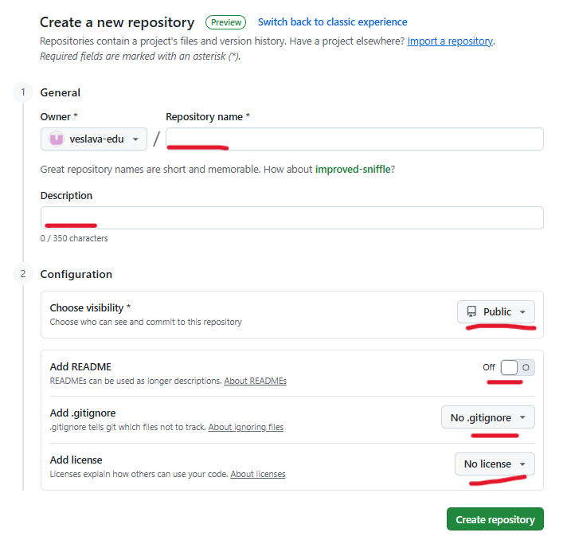
{kind=link}
Tras realizar el paso a paso indicado anteriormente, verás una ventana que muestra una configuración rápida, normalmente para un nuevo repositorio. Puedes iniciar esta configuración creando un nuevo archivo o subiendo un archivo existente al nuevo repositorio.
{kind=link}
Subir el archivo es tan sencillo como arrastrarlo a la zona de subida y hacer clic en el botón "Commit Changes".
{kind=link}
Una vez subido, aparecerá listado en la pantalla del proyecto.
{kind=link}
Los Tres Archivos Mágicos Iniciales
- README.md: Es la portada de tu proyecto. Un buen
READMEexplica qué hace tu proyecto, cómo instalarlo y cómo usarlo. Es tu carta de presentación. - .gitignore: Una lista de archivos y carpetas que Git debe ignorar. Imprescindible para no subir archivos de configuración con contraseñas, dependencias de
vendoro archivos temporales del sistema. - Licencia: Define las reglas legales de tu código. Indica cómo otros pueden usar, modificar y distribuir tu proyecto.
Tras hacer clic en "Create repository", serás llevado a la página principal de tu nuevo y reluciente proyecto. ¡Es hora de ponerle algo dentro!
Preguntas de Reflexión
- ¿Por qué es una buena práctica añadir siempre un archivo
README.mda tus repositorios públicos? - Estás trabajando en un proyecto PHP con Laravel. ¿Qué carpetas importantes añadirías al archivo
.gitignore? (Pista:vendores una de ellas). - Busca en internet qué es una licencia "MIT". ¿Por qué es una de las más populares para proyectos de código abierto?
Paso 2: El Corazón de la Colaboración: El Pull Request
En un entorno de equipo, rara vez (o nunca) subirás cambios directamente a la rama main. El flujo de trabajo profesional se centra en una herramienta llamada Pull Request (PR).
La analogía es esta: imagina que el proyecto es un libro de texto que estáis escribiendo en clase. La rama main es la versión final impresa. Si quieres añadir un nuevo capítulo (una nueva funcionalidad), no escribes directamente sobre el libro impreso. Lo que haces es:
-
Haces una fotocopia de la última versión (
crear una rama). -
Escribes tu capítulo en la fotocopia (
hacer commits en tu rama). -
Cuando terminas, le entregas tu capítulo al profesor y le dices: "Por favor, ¿podrías revisar esto y, si está bien, añadirlo al libro oficial?". Eso, amigos míos, es un Pull Request.
Vamos a simular este proceso desde la interfaz de GitHub.
-
Crear una Rama (Tu Borrador Seguro):
{kind=link}
{kind=link}
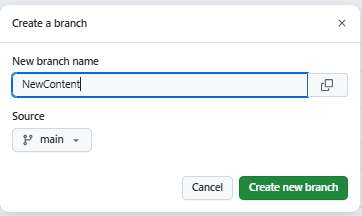
* ¡Listo! GitHub te ha movido automáticamente a esta nueva rama. Ahora estás en un entorno seguro para hacer cambios.
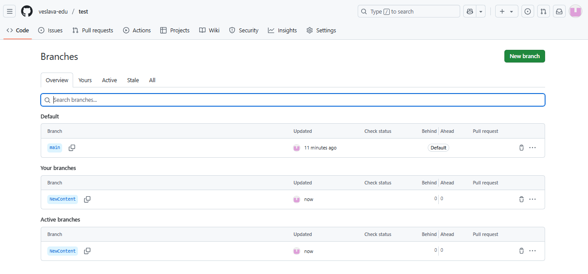
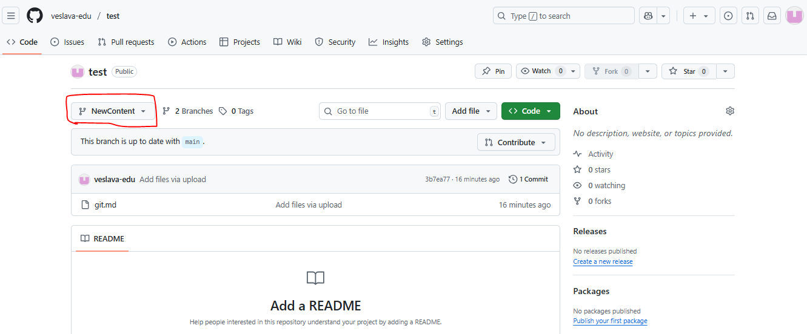
{kind=link}
{kind=link}
{kind=link}
-
Hacer Commits (Guardar tu Progreso):
- Navega a un archivo que quieras modificar o haz clic en "Add file" > "Create new file" para añadir uno nuevo (p. ej.,
new-file). 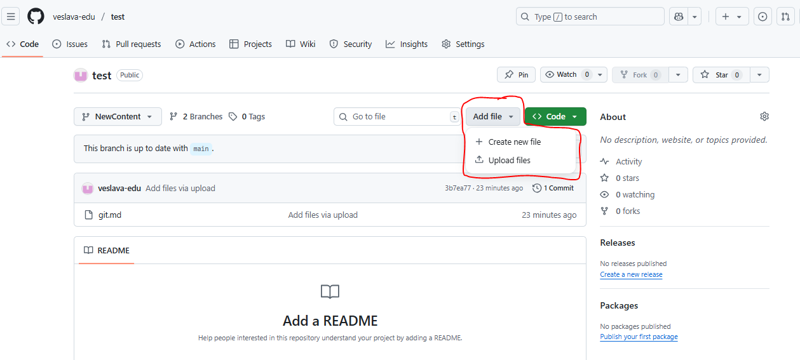 - GitHub te presentará un editor de texto directamente en el navegador. Haz tus cambios. 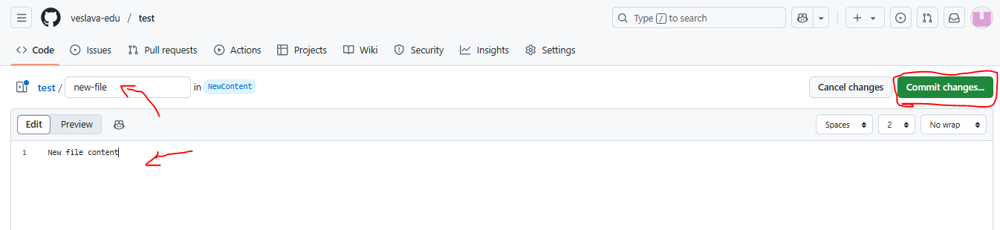
- Cuando termines, desplázate hacia abajo. Verás la sección "Commit changes". Escribe un mensaje de commit claro y descriptivo. 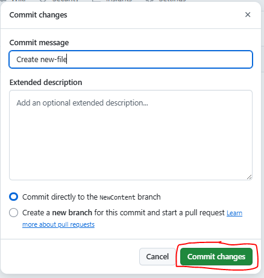
- Asegúrate de que estás haciendo el commit en tu nueva rama (
feature/NewContent) y haz clic en "Commit changes".
Editor Web vs. Desarrollo Local
Editar archivos directamente en GitHub es genial para corregir una errata rápida o para un cambio muy pequeño. Para el trabajo de desarrollo real, siempre es mejor seguir el ciclo local (
clonar,editar en VSCode,git add,git commit,git push) que vimos antes. Es mucho más potente y rápido. - Navega a un archivo que quieras modificar o haz clic en "Add file" > "Create new file" para añadir uno nuevo (p. ej.,
-
Abrir el Pull Request (Pedir la Revisión):
- Una vez que has subido tus commits a tu rama, GitHub es muy listo. Normalmente te mostrará un banner amarillo que dice "feature/NewContent had recent pushes" con un botón verde "Compare & pull request". ¡Hazle caso y haz clic! 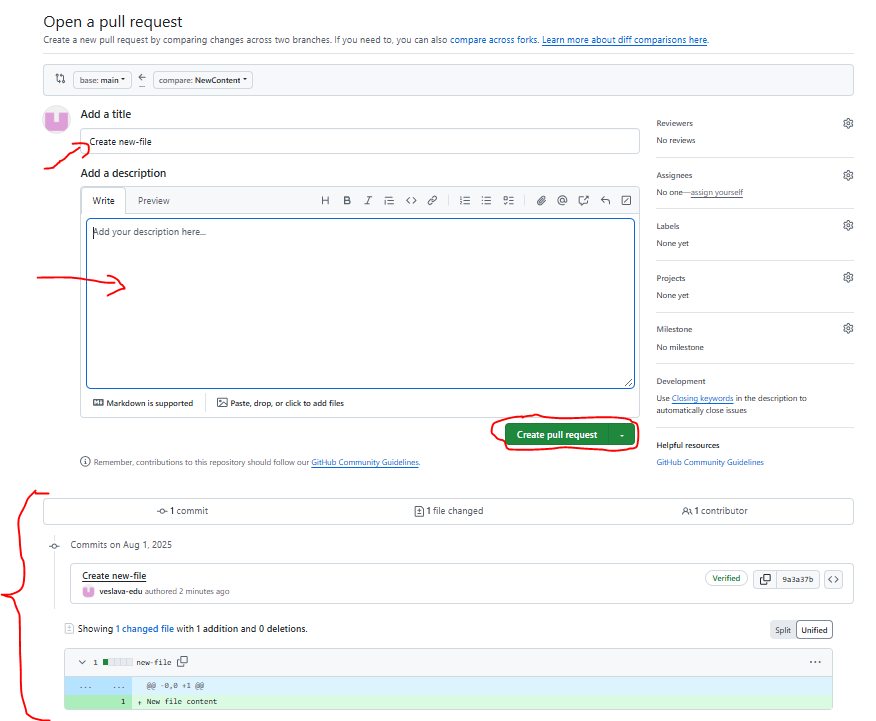
- Si no aparece, ve a la pestaña "Pull requests" y haz clic en "New pull request".
- Asegúrate de que la
basebranch esmainy lacomparebranch es la tuya (feature/NewContent). - Escribe un título claro para tu PR y una descripción detallada de los cambios que has hecho. Esta es tu oportunidad de explicar a tu equipo qué has hecho y por qué.
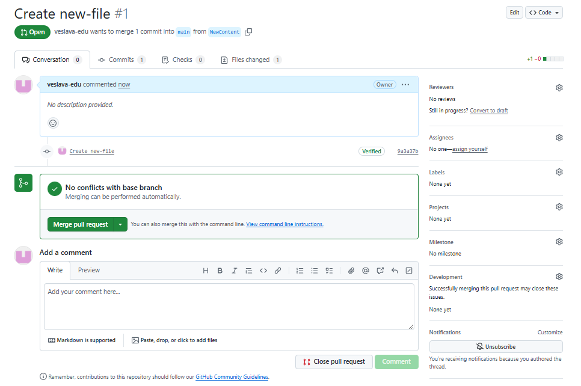
-
Revisar y Fusionar (El Visto Bueno Final):
- En un equipo real, ahora le pasarías el enlace de tu PR a un compañero para que lo revise. Podría dejar comentarios en líneas específicas de tu código y pedirte cambios.
- Una vez que el PR tiene la aprobación (o si estás trabajando solo), verás un gran botón verde que dice "Merge pull request". 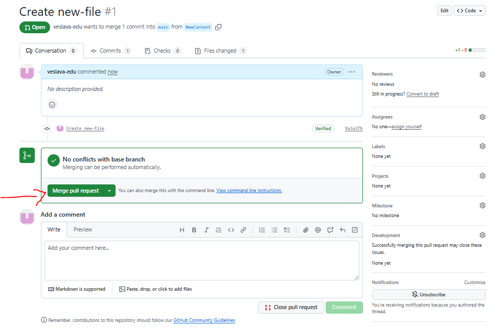
- Al hacer clic, se te pedirá que confirmes. ¡Hazlo sin miedo!
- ¡Felicidades! Tus cambios de la rama
feature/NewContentahora forman parte de la ramamain. 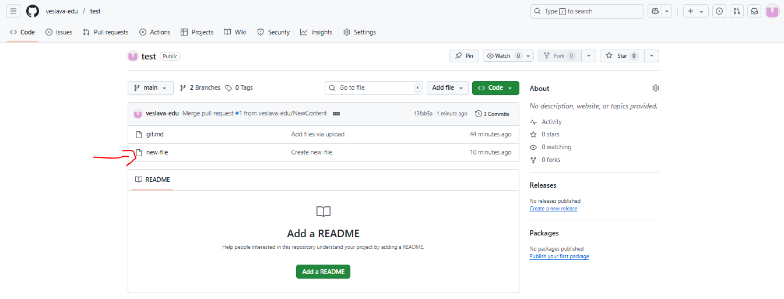
{kind=link}
{kind=link}
{kind=link}
{kind=link}
{kind=link}
{kind=link}
{kind=link}
Resumen gráfico del proceso:
sequenceDiagram
participant Dev as Desarrollador
participant GitHub
participant Main as Rama 'main'
participant Feature as Rama 'feature'
Dev->>GitHub: Crea la rama 'feature' desde 'main'
Note over Dev,Feature: Trabaja en la nueva<br>funcionalidad (hace commits)
Dev->>GitHub: Abre un Pull Request (feature -> main)
Note over GitHub: Se inician las discusiones,<br>revisiones, y tests automáticos.
participant Revisor as Otro Desarrollador
Revisor->>GitHub: Revisa el código y aprueba el PR
Dev->>GitHub: Fusiona (Merge) el Pull Request
GitHub->>Main: Los cambios de 'feature' se incorporan a 'main'
GitHub-->>Dev: ¡Fusión completada!¡Mantén Limpia la Casa!
Después de fusionar un Pull Request, la rama feature ya no es necesaria. GitHub te ofrecerá un práctico botón para "Delete branch". Es una excelente práctica hacerlo para mantener tu repositorio limpio y ordenado.
Preguntas de Reflexión
- ¿Cuál es la principal diferencia entre un
commity unpull request? - Estás a punto de fusionar un Pull Request y GitHub te avisa: "This branch has conflicts that must be resolved". ¿Qué crees que ha pasado? (¡Búscalo! Es el día a día del desarrollador).
- ¿Por qué es tan importante escribir un buen título y una buena descripción en un Pull Request en un entorno de equipo?
Git -> Flujo de Trabajo Básico: Tu Ejemplo Práctico
Basta de teoría. Vamos a crear un proyecto de ejemplo, paso a paso, como lo haríais en clase o en vuestro primer trabajo. Crearemos una simple página web con PHP.
Antes de poder usar la máquina del tiempo, necesitas construirla. La instalación de Git es sencilla y es el primer paso para convertirte en un profesional.
Instalación
Git es compatible con todos los sistemas operativos principales. El proceso varía ligeramente:
- Windows:
- Ve a la página oficial de Git para Windows.
- Descarga el instalador y ejecútalo.
- Durante la instalación, te hará muchas preguntas. Para empezar, puedes dejar todas las opciones por defecto. Son sensatas y funcionan bien. La opción más importante es la que te permite usar "Git Bash", una terminal muy potente.
- Si eres un usuario avanzado y tienes
winget, puedes instalarlo desde PowerShell:winget install --id Git.Git -e --source winget
Configuración Inicial (¡Solo una vez!)
Antes de nada, Git necesita saber quién eres para firmar tus "commits". Abre una terminal (Git Bash en Windows, o la terminal en Mac/Linux) y preséntate. Solo tienes que hacer esto una vez en tu vida por cada ordenador que uses.
# Configura tu nombre de usuario para todos tus repositorios
git config --global user.name "Tu Nombre Apellido"
# Configura tu email (el mismo que usarás en GitHub)
git config --global user.email "tu.email@ejemplo.com"
Creando nuestro primer proyecto "MiPortfolio"
Paso 1: Crear el repositorio remoto en GitHub
- Ve a GitHub.com y regístrate si no lo has hecho.
- Haz clic en "New" o "Create a new repository".
- Dale un nombre:
mi-portfolio-daw. - Añade una descripción: "Mi primer proyecto de portfolio para la clase de DAW".
- Déjalo Público.
- ¡Muy importante! Marca la casilla que dice "Add a README file". Esto inicializa el repositorio con un archivo, haciendo las cosas más fáciles.
- Haz clic en "Create repository". ¡Listo! Ya tienes tu garaje en la nube.
Paso 2: Clonar el repositorio a tu máquina local
Ahora vamos a traer ese repositorio de la nube a tu ordenador. A esto se le llama "clonar".
- En la página de tu repositorio en GitHub, haz clic en el botón verde que dice "<> Code".
- Asegúrate de que está seleccionada la pestaña HTTPS y copia la URL (debería ser algo como
https://github.com/tu-usuario/mi-portfolio-daw.git). - En tu terminal, navega a la carpeta donde guardas tus proyectos (p. ej.,
cd Documents/ProyectosDAW). - Ejecuta el comando
git clonepegando la URL que copiaste:
# Clona el repositorio remoto a una nueva carpeta local llamada "mi-portfolio-daw"
git clone https://github.com/tu-usuario/mi-portfolio-daw.git
¡Felicidades! Ahora tienes una carpeta mi-portfolio-daw en tu ordenador que está conectada mágicamente a su gemela en GitHub.
El Ciclo Sagrado: add, commit, push
Este es el flujo de trabajo que repetirás cientos de veces. Imagínalo como un proceso de empaquetado y envío en tres pasos.
stateDiagram-v2
direction LR
Workspace: Directorio de Trabajo <br/> (Archivos sin seguimiento)
Staging: Área de Preparación <br/> (Archivos listos para empaquetar)
LocalRepo: Repositorio Local <br/> (Paquetes confirmados)
RemoteRepo: Repositorio Remoto <br/> (Paquetes enviados)
[*] --> Workspace: Modificas/creas archivos
Workspace --> Staging: 'git add <archivo>'
Staging --> Workspace: Deshaces 'add'
Staging --> LocalRepo: 'git commit -m "mensaje"'
LocalRepo --> Staging: Deshaces 'commit'
LocalRepo --> RemoteRepo: 'git push'Paso 3: Realizar y confirmar nuestro primer cambio
- Con la terminal, entra en la nueva carpeta:
cd mi-portfolio-daw. - Abre la carpeta con tu editor de código favorito (p. ej., Visual Studio Code). Verás que solo contiene el archivo
README.md. - Crea un nuevo archivo llamado
index.phpy añade algo de código:
<?php
// index.php
declare(strict_types=1);
?>
<!DOCTYPE html>
<html lang="es">
<head>
<meta charset="UTF-8">
<title>Mi Portfolio DAW</title>
</head>
<body>
<h1>¡Hola, Mundo!</h1>
<p>Bienvenido a mi increíble portfolio. Próximamente, más contenido.</p>
<?php echo "<p>La fecha de hoy es " . date("d-m-Y") . "</p>"; ?>
</body>
</html>
- Ahora, volvamos a la terminal. Usa
git statuspara que Git te diga qué ha cambiado:
# Pregunta a Git por el estado actual del repositorio
git status
Git te responderá algo como: Untracked files: (use "git add <file>..." to include in what will be committed) index.php. Te está diciendo: "Oye, he visto un archivo nuevo, index.php, pero no le estoy haciendo seguimiento. ¿Quieres que lo prepare para el próximo envío?".
- Preparamos el archivo para el envío (
git add). Le decimos a Git que queremos incluirindex.phpen nuestro próximo "paquete" (commit).
# Añade el archivo index.php al "Staging Area" o área de preparación.
git add index.php
# Si quieres añadir todos los archivos modificados a la vez:
git add .
- Empaquetamos los cambios (
git commit). Ahora que los archivos están en el área de preparación, creamos el paquete (commit) con un mensaje descriptivo.
¡Pésima Práctica!
Nunca, jamás, escribas mensajes de commit como "cambios", "asdasd" o "arreglado". ¡Sé descriptivo! Tu "yo" del futuro y tus compañeros de equipo te lo agradecerán. Un buen mensaje sería: "feat: Añade la estructura inicial de index.php con saludo" o "fix: Corrige el cálculo de impuestos en la factura".
# Crea un commit con un mensaje claro y descriptivo
git commit -m "feat: Añade el fichero inicial index.php con un saludo"
- Enviamos el paquete a GitHub (
git push). El commit solo existe en tu repositorio local. Para que el mundo (y tu equipo) lo vea, tienes que "empujarlo" al repositorio remoto en GitHub.
# Empuja los commits de tu rama local 'main' a la rama remota 'origin'
git push
¡Y ya está! Si ahora refrescas la página de tu repositorio en GitHub, verás tu index.php allí. ¡Acabas de completar tu primer ciclo de desarrollo con Git!
Sincronizando con el Equipo: git pull
Imagina que un compañero ha subido cambios al repositorio mientras tú no mirabas. Para obtener la última versión del proyecto, usas git pull.
# Trae los cambios del repositorio remoto y los fusiona con tu repositorio local
git pull
Buena Práctica Profesional
Antes de empezar a trabajar cada día, o antes de hacer un push, haz siempre un git pull para asegurarte de que tienes la versión más reciente del código. Esto te evitará muchos problemas y conflictos.
Preguntas de Reflexión
- ¿Qué diferencia hay entre
git addygit commit? Usa una analogía (p. ej., una cesta de la compra). - Has modificado 3 archivos, pero solo quieres incluir 2 en tu próximo commit. ¿Qué comandos usarías?
- Haces un
commitpero se te olvida hacerpush. Apagas el ordenador y al día siguiente se rompe. ¿Has perdido tu trabajo? ¿Dónde está esecommit?
Ramificaciones: Creando Universos Paralelos con branch
Las ramas son, sin duda, una de las características más potentes de Git. Son la clave para un trabajo en equipo ordenado y para poder experimentar sin miedo.
La analogía es simple: la rama main es la versión oficial y estable de tu proyecto, la que podrías enseñar a un cliente. Cuando quieres trabajar en algo nuevo (una feature) o arreglar un error (bugfix), creas una copia (una nueva rama) a partir de main, trabajas en esa copia y, solo cuando está terminada y probada, la incorporas de nuevo a main.
Ejemplo Práctico: Añadiendo un Fichero de Estilos
Vamos a añadir un style.css a nuestro proyecto mi-portfolio-daw, pero siguiendo las buenas prácticas: en una rama separada.
- Asegúrate de estar en la rama principal y tenerlo todo actualizado.
# Cambia a la rama main (aunque ya deberías estar ahí)
git checkout main
# Baja los últimos cambios por si acaso
git pull
- Crea y muévete a tu nueva rama. Vamos a llamarla
feature/añadir-estilos.
# Crea la nueva rama y salta a ella en un solo paso
git checkout -b feature/añadir-estilos
Switched to a new branch 'feature/añadir-estilos'. ¡Ya estás en tu universo paralelo! Cualquier cosa que hagas aquí no afectará a main hasta que tú lo decidas.
-
Trabaja en la nueva rama. Crea un archivo
css/style.cssy modificaindex.phppara enlazarlo.-
Crea una carpeta
cssy dentro un archivostyle.css:/* css/style.css */ body { font-family: Arial, sans-serif; background-color: #f0f8ff; color: #333; } h1 { color: #005a9c; } -
Modifica
index.phppara que incluya la hoja de estilos:// ... en la sección <head> de index.php <link rel="stylesheet" href="css/style.css">
-
-
Confirma los cambios EN LA RAMA NUEVA. Sigue el ciclo que ya conoces:
addycommit.
# Añade todos los nuevos cambios (la carpeta css y la modificación de index.php)
git add .
# Confirma los cambios en la rama 'feature/añadir-estilos'
git commit -m "feat: Añade fichero CSS y lo enlaza desde el index"
- Sube tu rama a GitHub. La primera vez que subes una nueva rama, la sintaxis de
pushes un poco diferente.
# Sube la nueva rama a GitHub y la configura para el seguimiento
git push --set-upstream origin feature/añadir-estilos
- Fusiona los cambios de vuelta a
main(Merge). ¡La nueva funcionalidad está lista! Es hora de incorporarla a la rama principal.
# 1. Vuelve a la rama principal, la que va a recibir los cambios
git checkout main
# 2. Asegúrate de que está actualizada
git pull
# 3. Fusiona los cambios de tu rama 'feature' DENTRO de 'main'
git merge feature/añadir-estilos
- Sube los cambios a
mainy limpia. Ahora tu ramamainlocal tiene los nuevos estilos, pero lamainde GitHub todavía no.
# Sube la rama 'main' actualizada a GitHub
git push
# (Opcional pero recomendado) Borra la rama que ya no necesitas
git branch -d feature/añadir-estilos
Este es el flujo de trabajo que usarás constantemente en un entorno profesional.
gitGraph
commit id: "Init"
branch "feature/añadir-estilos"
checkout "feature/añadir-estilos"
commit id: "Añade CSS"
checkout main
merge "feature/añadir-estilos"
commit id: "Push a main"Preguntas de Reflexión
- ¿Por qué es una mala idea trabajar siempre directamente sobre la rama
main? - Has creado una rama para una nueva funcionalidad, pero al final el cliente dice que no la quiere. ¿Qué haces con esa rama? ¿Afecta en algo al proyecto principal?
- ¿Qué es un "Pull Request" o "Merge Request" en GitHub/GitLab? (¡Búscalo! Es el siguiente paso lógico a lo que acabamos de ver).
El Ecosistema Git: Ventajas, Desventajas y Alternativas
Elegir las herramientas adecuadas es fundamental. Aunque Git y GitHub son el estándar de facto, es importante entender por qué y qué otras opciones existen.
Pros y Contras
| Plataforma | Ventajas (Pros) | Desventajas (Contras) |
|---|---|---|
| Git | Control Total: Eres el dueño absoluto de tu historial. Offline-Friendly: Puedes trabajar en cualquier lugar. Rendimiento: Es increíblemente rápido. Flexible: Se adapta a cualquier flujo de trabajo. |
Curva de Aprendizaje: Requiere tiempo dominarlo. Aislado por Defecto: No incluye herramientas de colaboración visuales. |
| GitHub | Colaboración Superior: Los Pull Requests y la revisión de código son geniales. Ecosistema Enorme: Integración con miles de servicios (CI/CD, etc.). Tu Portfolio Público: Es el escaparate perfecto para mostrar tu trabajo. |
Dependencia de Internet: Necesitas conexión para sincronizar. Propiedad Corporativa: Aunque es genial, tus repositorios están en servidores de Microsoft. Limitaciones en Planes Gratuitos: Algunas funciones avanzadas son de pago. |
¿Cuándo Usar Qué?
- Usa Git SIEMPRE: No hay excusa. Para cualquier proyecto, incluso uno personal que nunca saldrá de tu ordenador, Git te ofrece una red de seguridad indispensable.
- Usa Git + GitHub (o similar) cuando:
- Necesitas una copia de seguridad remota de tu proyecto.
- Quieres colaborar con otros desarrolladores.
- Quieres contribuir a proyectos de código abierto.
- Necesitas integrar herramientas de automatización (CI/CD) que se activen cuando subes código.
- Quieres construir tu marca como desarrollador.
Este enfoque híbrido (control local con Git, colaboración en la nube con GitHub) es el que utiliza el 99.9% de la industria.
Competidores y Alternativas
Aunque GitHub es el rey, no es el único jugador en el campo del alojamiento de repositorios:
- GitLab: Es la alternativa más potente. Ofrece un producto muy completo que incluye, desde el principio, herramientas de CI/CD integradas de forma nativa. Muchas empresas lo prefieren porque pueden alojarlo en sus propios servidores (auto-alojamiento), dándoles un control total sobre su código.
- Bitbucket: De la empresa Atlassian (creadores de Jira y Trello), se integra a la perfección con su ecosistema de herramientas de gestión de proyectos. Es muy popular en el mundo corporativo.
- AWS CodeCommit y Azure DevOps: Son las soluciones de Amazon y Microsoft, respectivamente. Ofrecen una integración muy profunda con sus propias nubes, lo que puede ser una gran ventaja si tu infraestructura ya depende de ellas.
Preguntas de Reflexión
- Estás haciendo un pequeño script en tu casa para automatizar una tarea personal. ¿Usarías Git? ¿Y GitHub? Justifica tu respuesta.
- Tu empresa desarrolla una aplicación bancaria y por política de seguridad, el código no puede estar alojado en servidores de terceros. ¿Qué plataforma de las mencionadas podría ser la más adecuada y por qué?
- ¿Crees que la "propiedad corporativa" de GitHub es realmente una desventaja para un desarrollador junior que está construyendo su portfolio?
Para Saber Más
Dominar Git lleva tiempo y práctica, pero es una de las inversiones más rentables que harás en tu carrera. Cuando te sientas cómodo con lo que hemos visto, te animo a explorar más a fondo.
- Documentación Oficial de Git (en español): La fuente de la verdad. Es densa, pero increíblemente completa. Ideal como referencia.
- Learn Git Branching: Un tutorial interactivo y visual absolutamente fantástico para entender cómo funcionan las ramas, los
merge, losrebasey mucho más. ¡Muy recomendado! - Atlassian Git Tutorial (en español): Tutoriales de alta calidad de los creadores de Bitbucket. Cubren desde lo más básico hasta flujos de trabajo avanzados.